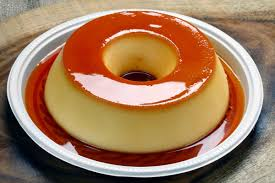

PUDIM DE LEITE CONDENSADO

Ingredientes
Pudim
- 1 lata de leite condensado
- 1 lata de leite (medida da lata de leite condensado)
- 3 ovos inteiros
Calda
- 1 xícara (chá) de açúcar
- 1/2 xícara de água
Modo de preparo
Pudim
- Primeiro, bata bem os ovos no liquidificador.
- Acrescente o leite condensado e o leite, e bata novamente.
Calda
- Derreta o açúcar na panela até ficar moreno, acrescente a água e deixe engrossar.
- Derreta o açúcar na panela até ficar moreno, acrescente a água e deixe engrossar.
- Asse em forno médio por 45 minutos, com a assadeira redonda dentro de uma maior com água.
- Espete um garfo para ver se está bem assado.
- Deixe esfriar e desenforme.
click aqui E acesse o site de referência dessa receita